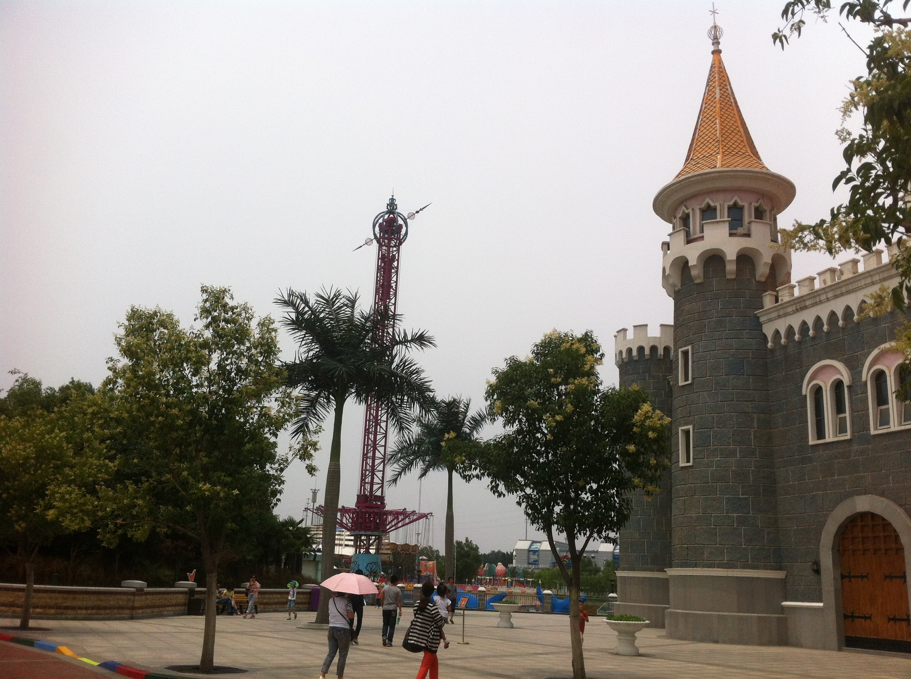

郑州市，河南省省会，地处华北平原南部、黄河中下游、河南省中部偏北。 北临黄河，西依嵩山，东南为广阔的黄淮平原。
郑州在三千多年前，成为中国商代中期都城。全市各类文物古迹达一万余处，其中国家级重点文物保护单位38处43项。包括登封“天地之中”历史建筑群、黄帝故里、郑州商城遗址等历史名胜。
郑州地处中国地理中心，是全国重要的铁路、航空、高速公路、电力、邮政电信主枢纽城市，中国中部地区重要的工业城市。目前有汽车、装备制造、煤电铝、食品、纺织服装、电子信息等六大优势产业。氧化铝产量占全国总产量的50%，拥有亚洲最大、最先进的大中型客车生产企业，冷冻食品占全国市场份额的40%以上。
得益于其独特的地理位置，郑州也是历史上著名商埠，至今仍是中部地区重要的物资集散地，每年都会举办全国性、区域性大型商贸活动。
郑州商品交易所是三大全国性商品交易所之一，“郑州价格”一直是世界粮食生产和流通的指导价格。2016年2月23日，郑州在CCTV“中国经济生活大调查”2015年度十大最具幸福感省会城市中名列第四。
